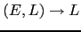

Sig: Realización del AAA para
Sup: Árbol de Análisis Abstracto
Ant: Árbol de Análisis Abstracto
Err: Si hallas una errata ...
Lenguajes Árbol y Gramáticas Árbol
Un árbol de análisis abstracto (denotado AAA, en
inglés abstract syntax tree o AST)
porta la misma información que
el árbol de análisis sintáctico pero de forma mas condensada, eliminándose
terminales y producciones que no aportan información.
Ejemplo 4.9.2
Una versión simplificada del alfabeto con aridad en el que estan basados
los árboles construidos por el compilador de Tutu es:
|
|
|
|

|
|
.
|
Observe que los elementos en  no necesariamente son
árboles ``correctos''. Por ejemplo, el árbol
es un elemento de
.
no necesariamente son
árboles ``correctos''. Por ejemplo, el árbol
es un elemento de
.
Definición 4.9.5
Se define el lenguaje árbol generado por una gramática
 como el lenguaje
.
como el lenguaje
.
Ejemplo 4.9.3
Sea
 con
con
 y
y
 y sea
. El conjunto de producciones
y sea
. El conjunto de producciones  es:
es:
La producción
es del tipo

.
Informalmente, el lenguaje generado por  se obtiene realizando sustituciones
sucesivas (derivando) desde el símbolo de arranque hasta producir un
árbol cuyos nodos estén etiquetados con elementos de
se obtiene realizando sustituciones
sucesivas (derivando) desde el símbolo de arranque hasta producir un
árbol cuyos nodos estén etiquetados con elementos de  . Debería ser claro
que, en este ejemplo,
. Debería ser claro
que, en este ejemplo,  es el conjunto de las listas en
es el conjunto de las listas en  , incluyendo la lista vacía:
, incluyendo la lista vacía:
Ejercicio 4.9.1
Construya una derivación para el árbol
 .
¿De que tipo es el árbol
?.
.
¿De que tipo es el árbol
?.
Cuando hablamos del AAA producido por un analizador sintáctico,
estamos en realidad hablando de un lenguaje árbol cuya definición
precisa debe hacerse a través de una gramática
árbol regular.
Mediante las gramáticas árbol regulares disponemos de un mecanismo para
describir formalmente el lenguaje de los
AAA que producirá el analizador sintáctico
para las sentencias Tutu.
Ejemplo 4.9.4
Sea
con
y las producciones:
Entonces el lenguaje
contiene árboles
como el siguiente:
El cual podría corresponderse con una sentencia como
a = b + 4 * c.
El lenguaje de árboles descrito por esta gramática árbol
es el lenguaje de los AAA de las sentencias de Tutu.
Ejercicio 4.9.2
Redefina el concepto de árbol de análisis concreto dado
en la definición 8.1.7 utilizando el
concepto de gramática árbol. Con mas precisión,
dada una gramática
defina una gramática
árbol
 tal que
sea el lenguaje
de los árboles concretos de
. Puesto que las partes
derechas de las reglas de producción de
pueden ser
de distinta longitud, existe un problema con
la aricidad de los elementos de
tal que
sea el lenguaje
de los árboles concretos de
. Puesto que las partes
derechas de las reglas de producción de
pueden ser
de distinta longitud, existe un problema con
la aricidad de los elementos de  . Discuta posibles
soluciones.
. Discuta posibles
soluciones.
Ejercicio 4.9.3
¿Cómo son los árboles sintácticos en las derivaciones árbol?
Dibuje varios árboles sintácticos para las gramáticas
introducidas en los ejemplos
4.9.3
y 4.9.4.
Intente dar una definición formal del concepto de árbol de análisis
sintáctico asociado con una derivación en una gramática árbol
Definición 4.9.6
La notación de Dewey es una forma de especificar los subárboles
de un árbol
 . La notación sigue el mismo
esquema que la numeración de secciones en un texto:
es una palabra formada por números separados
por puntos. Así t/2.1.3
denota al tercer hijo del primer hijo del segundo hijo
del árbol
. La notación sigue el mismo
esquema que la numeración de secciones en un texto:
es una palabra formada por números separados
por puntos. Así t/2.1.3
denota al tercer hijo del primer hijo del segundo hijo
del árbol  .
La definición formal sería:
.
La definición formal sería:
-
- Si
y
y
 es una
cadena de números y puntos, se define
inductivamente el subárbol
como el subárbol
-ésimo del
es una
cadena de números y puntos, se define
inductivamente el subárbol
como el subárbol
-ésimo del
 -ésimo subárbol de
. Esto es:
-ésimo subárbol de
. Esto es:
Ejercicio 4.9.4
Sea el árbol:
Calcule los subárboles
 ,
,
,
,
 y
.
y
.
Sig: Realización del AAA para
Sup: Árbol de Análisis Abstracto
Ant: Árbol de Análisis Abstracto
Err: Si hallas una errata ...
Casiano Rodríguez León
2013-03-05